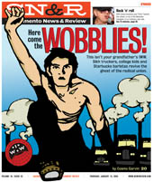

Submitted on Wed, 05/11/2005 - 3:48pm
February, 15, 2005
The National Labor Relations Board issued a complaint last week against Wild Oats Natural Foods for the firing of union organizer, Tom Kappas. The Industrial Workers of the World has been struggling to re instate Kappas for the past seven months in a campaign aimed at restoring fairness to how the company deals with union organizing. The campaign has turned out several nationwide pickets, a petition with over 500 supporters, and now a complaint from the N.L.R.B.
Kappas was fired on July, 10, 2004 for discounting less than 2 pounds of rotten produce. The produce manager gave permission to discount spoiled produce to all produce employees and then during the firing interview said he never approved discounts. The store director, Fred Meyer, then fired Tom for the discount even after Kappas produced a receipt for the produce. Meyer initiated a random bag search the night before.
Submitted on Wed, 05/11/2005 - 3:46pm
By Marcus Denton, Lucy Parsons (Austin) IWW General Membership
Branch - February 13, 2005.
As 2005 began in Austin, Texas, two IWW coworkers were fired for
union
activity, spurring a series of solidarity actions indicative of the
rejuvenation in the Lucy Parsons General Membership Branch.
On January 7th, just one week after the first firing occurred, fifteen
Wobs showed up at Fresh Plus, the charming, independent neighborhood
grocery store and flagrant union buster in question, to fight the
sacking of fellow worker Ryan Hastings. Members were energized as they
voiced support and passed out leaflets to some of the storeís 25
employees and the customers inside the store, forcing supervisors to
hunt around and pick up leaflets left behind. Outside in front of the
store, Wobs leafleted and talked to customers about the firing until
they were asked to leave, at which point a new batch took their place
doing the same.
Submitted on Wed, 05/11/2005 - 3:45pm
Meet Joe Hill, By Tom Walsh - Sacramento News and Review
Editor's note.
 "Hello?"
"You've got to get down here right away. They're tearing down the
Morrison grocery building."
"And the significance of that is ..."
"Geez. You don't know the story of the Wobblies and Joe
Hill?"
I didn't, but I would. I was working as a reporter in Salt
Lake City, and soon I would be fascinated by the Joe Hill arrest and
execution. Like many people my age, I was woefully under-informed about
the history of the radical labor movement in this country.
By Marcus Denton, Lucy Parsons (Austin) IWW General Membership Branch - February 13, 2005.
As 2005 began in Austin, Texas, two IWW coworkers were fired for union activity, spurring a series of solidarity actions indicative of the rejuvenation in the Lucy Parsons General Membership Branch.
On January 7th, just one week after the first firing occurred, fifteen Wobs showed up at Fresh Plus, the charming, independent neighborhood grocery store and flagrant union buster in question, to fight the sacking of fellow worker Ryan Hastings. Members were energized as they voiced support and passed out leaflets to some of the storeís 25 employees and the customers inside the store, forcing supervisors to hunt around and pick up leaflets left behind. Outside in front of the store, Wobs leafleted and talked to customers about the firing until they were asked to leave, at which point a new batch took their place doing the same.
Submitted on Fri, 03/18/2005 - 10:58am
Generation Debt: The New Economics of Being Young - You make chump change. And Congress likes it that way; By Anya Kamenetz - Village Voice, March 18th, 2005.
Just off Coney Island Avenue, in Ditmas Park, among the car washes and Pakistani sweet shops, there sits a lefty coffeehouse that seems to have dropped in from Williamsburg or maybe Seattle. Inside, the walls are painted an inviting shade of yellow; undulating, handmade bookshelves feature local zines. One of the store's bestsellers is America (The Book), by the creators of The Daily Show. A small latte is $3, 10 cents less than at Starbucks.
Vox Pop, as the café is called, is the anti-Starbucks in more ways than one. On March 1, its six employees, led by 18-year-old Emmy Gilbert, announced that they had joined the Industrial Workers of the World's NYC Retail Workers Union, IU 660. "Vox Pop workers decided we wanted to take the shop's motto of democracy to its fullest extent," Gilbert said. "And the IWW doesn't think organizing retail is futile."
Sander Hicks, who opened Vox Pop in November, may be the first boss to summon the revolutionary anarcho-syndicalist forces on behalf of his own workers. He is best known as the founder of Soft Skull Press, the respected underground imprint; the café-bookstore is a physical extension of his ideals about politics and community. After consulting with the IWW, Hicks settled on a starting wage of $10 an hour. "If we pay people $6 an hour we're going to get a low level of job love, people stealing from you, attacking customers," he says. "How can we not afford to pay more?"